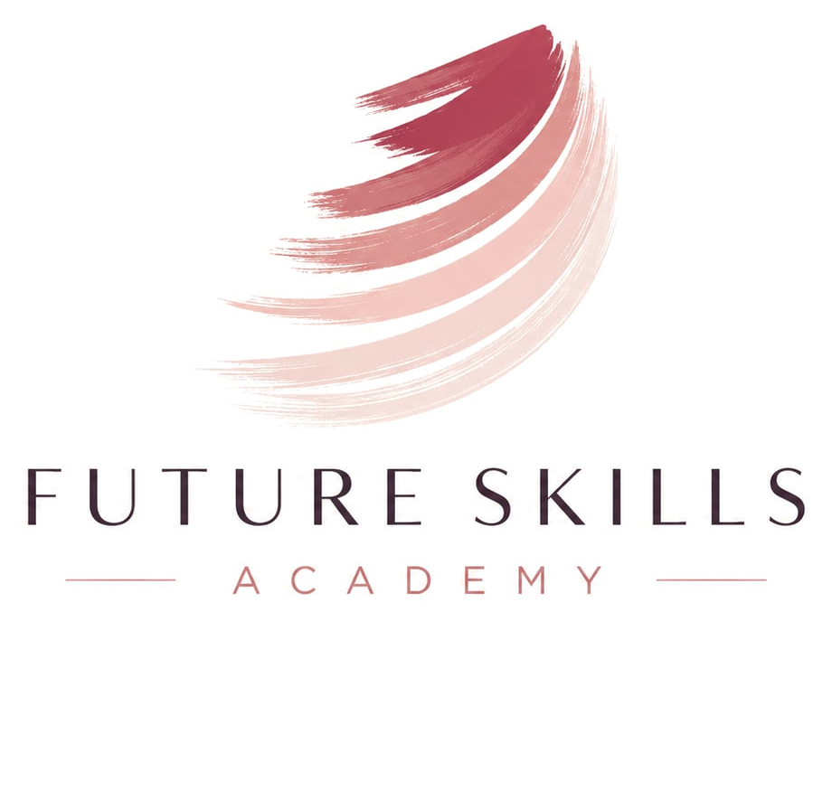

The skills that compound when AI does the rest.
AI made execution cheap. What remains scarce is the human layer: technical judgment, agency, taste, trust, and clarity. Future Skills Academy trains those five — the eternal skills, practiced the way the best people work in 2026.
The thesis
When intelligence is abundant, judgment is the bottleneck.
-
Execution is no longer the moat.
Code, copy, designs, and decks now take hours instead of weeks. Anyone can produce. The difference between people is no longer output — it is what they choose to build, what they refuse to ship, and who trusts them.
-
The new unit of work is direction.
In 2026 the best people work like editors-in-chief of a fleet of AI systems: they set intent, delegate aggressively, verify ruthlessly, and take responsibility for the result.
-
Eternal skills, modern practice.
Judgment, agency, taste, trust, and clarity have always mattered. What changed is the leverage behind them. We teach the timeless skill and the 2026 way of practicing it — together, because neither works alone.
The five tracks
One academy. Five skills that do not expire.
Each track is six modules of lessons, drills, and real work — designed to be completed in eight weeks alongside a job. Your progress is saved in your browser as you go.
Member of Technical Staff
Technical craft · AI-native engineering
Build real systems with AI as your engineering team. Context engineering, agents, evals, verification — and the fundamentals that make you the person who can tell when the machine is wrong.
Track 02High Agency
Leadership · Ownership · Decisions
The skill of making things happen without permission. Decision-making under uncertainty, leverage, leading AI-augmented teams, and the courage to own outcomes no one assigned you.
Track 03Taste
Design · UX · Quality judgment
When anyone can generate a thousand options, the rare skill is knowing which one is good. Train your eye, learn the eternal rules of craft, and direct AI like a design lead — not a slot machine.
Track 04Relationships
Sales · Customers · Trust
In a world of synthetic everything, a human who listens, keeps promises, and plays long games is the scarcest asset. Discovery, founder-led sales, and relationships that compound for decades.
Track 05Communication
Writing · Speaking · Clarity
Fluent words are free now; clarity is not. Think in writing, speak so it lands, model your audience — human or machine — and be the person whose messages are always worth opening.
The method
Learn it. Drill it. Ship it.
No passive video libraries. Every lesson ends in practice, every module ends in real work, and every track ends in a capstone you can show.
Short, dense lessons
Each lesson is a few minutes of reading that changes how you work the same day. The ideas are old; the application is 2026.
Practice on real stakes
Every lesson carries a practice assignment that uses your actual job, project, or customers as the training ground — never toy exercises.
A capstone you can show
Each track closes with a two-week capstone: a shipped system, a led project, a redesigned product, or a won relationship. Proof, not certificates.
House principles
What we hold to be eternal.
Verify everything
Abundant intelligence produces abundant plausible nonsense. The professional habit of 2026 is checking — outputs, claims, and your own assumptions.
Own the outcome
You can delegate the work to people or machines. You can never delegate the responsibility. Agency means the result has your name on it.
Play long games
Quality, reputation, and trust compound slowly and collapse instantly. Every track here optimizes for the decade, not the demo.
Founding cohort
Build the skills the future cannot automate away.
The curriculum is open — start any track right now. To join a guided cohort with live critique, peers, and accountability, write to us.
Join the founding cohort